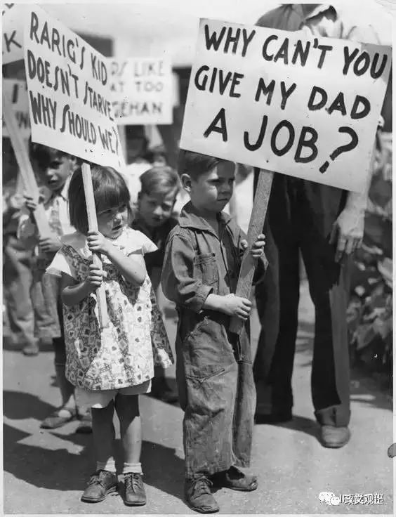

收录于合集
Min Tang, Narisong Huhe, and Qiang Zhou, “Contingent Democratization: When Do Economic Crises Matter?” British Journal of Political Science , Vol.47, No.1, 2017.

民主化理论是比较政治学的重要议题。转型学中，对民主转型的讨论极少能忽视经济变量，故民主转型理论也是比较政治经济学（CPE）和国际政治经济学（IPE）可以有所作为的研究领域。 唐敏、呼和那日松、周强 三位老师即将在 British Journal of Political Science 发表的文章便是此领域的最新成果之一。
文中运用1970-2007年106个威权国家的面板数据，讨论了经济危机在何时能触发民主转型。其中， 国家对经济事务的参与度（ economic engagement of the state ）是本文着重阐述的条件变量。 概言之， 当威权国家遭遇经济危机时，若该政权对经济事务的参与度越大，民主转型就越容易发生，经济危机本身对民主转型产生的影响则是不确定的。 这里的参与度指的是该国的结构性因素，而不是指应对危机的策略。
一、问题的提出
经济危机会触发民主转型，这一观点被广为接受。既有文献对这一现象的解释主要有两类的理论机制。 一是联盟视角（ coalition thesis ）。 经济危机带来的后果使得威权政体无法获得足够的资源来支付其支持者，无论该政权的支持者是资产阶级、中产阶级还是组织起来的劳工。 二是合法性视角（ legitimacy thesis ）。 经济危机损害了威权政体的绩效合法性。
然而， 从二战后的世界历史来看，经济危机对政体类型的影响则显得更为复杂。 例如，尽管阿根廷、玻利维亚、巴西及其他一些拉美国家在经济危机中经历了民主转型，许多非洲的威权统治者，如津巴布韦的Mugabe和多哥的Eyadema，在持续的经济危机面前却成功维持着政权。印度尼西亚的Suharto政权1998年在亚洲金融危机中崩溃，但是Mahatir在马来西亚一直掌权至2003年。 根据类似的经验事实， Gasirowski(1995) 在其早年的研究中便指出，尽管经济危机会触发民主崩溃，但它们对民主转型则没有确定的影响。
那么， 经济危机在何种条件下导致民主转型呢？还是说经济危机与民主转型间的关系是随意而不确定的。
二、理论机制
为了更进一步地探讨经济危机对民主转型的影响机制，作者发现了“国家的经济事务参与度”（严格来说应该是“政权”而非“国家”，为符合表达习惯故统一使用“国家”）这一核心的条件变量。现代化理论中，尤其是对后发国家而言，国家在经济发展中的作用是不能忽视的。全球化进程开始之后，国内市场面临国际资本的入侵，而发展中国家在此过程中需要国家的参与来整合国内市场并保护幼稚产业。 但 在发生经济危机时，国家对经济事务的参与度越高，则发生民主转型的可能就越大，有如下两方面的理论机制：
第一，国家对经济事务的参与度越高，在社会行为体看来，就更应该为经济危机的发生承担责任，经济危机被政治化。 在经济增长时，威权政体的政治精英（political elites）与商人阶级（business class）倾向于形成联盟来维护既有政权。商人阶级从合作中获得银行低息贷款、政府补贴等优惠待遇，政治精英则从经济增长中获得租金，并通过获得的资源来收买应对各类社会不满。而 在经济危机时，维系威权统治的物质激励则有可能崩溃，威权者无法获得足够的资源来维持政治支持，这降低了政治精英的议价能力。
此时，商人阶级会将经济的失败归责于执政者，并寻求改变现有的政治安排。 试想，在极端情况下，如果国家对经济事务没有任何参与，那么转变政体也就丝毫无助于解决危机下的经济问题，民主转型就变得不必要了。在更广范围内，经济危机也破坏了政权的合法性，尤其是对那些威权政体而言。 威权政体下的民众倾向于将经济绩效与政体合法性关联起来，并且当评估经济增长和收入变化时，他们很少区分这是由于外部冲击还是治理能力。 威权国家更有可能将经济上取得的成绩归功于它们治理的有效性，并把合法性建立在不凡的经济绩效基础上。然而，这种经济绩效与政权合法性的联系也会使得政体的稳定性对经济形势更为敏感。 国家对经济事务的参与度越高，其在经济危机时承受的责难就越大。
第二，国家对经济事务的参与度越高，在经济危机中，政治精英在自身的租金止损和商人阶级的利益止损之间会倾向于选择前者，这会增加商人阶级背叛统治联盟的概率，同时也增加了劳工阶级（ masses ）反叛的动力，商人阶级会与劳工阶级形成联盟共同反对现有的威权政体。
作者采用了形式模型说明了以上机制的因果逻辑。 模型中有三类行为体：政治精英、商人阶级、劳工阶级。政治精英和商人阶级都享有特权（privileged），它们彼此之间可以区分。政治精英收益（revenues）要大于商人阶级的收租（rent）。政权既提供大众（劳工阶级）可获得的公共物品，也提供只供统治联盟内享有的私人物品。当经济危机发生时，政治精英有动力运用自身垄断的权力来保护资产，他们可以采取的方式有加税、国有化、减少补贴等。如此一来，相较于商人阶级和劳工阶级，政治精英可以不成比例的少受损失，甚至不受损失。
商人阶级可以选择背叛（ defect ）原先与政治精英形成的统治联盟，其代价是μ。如果取得成功，商人阶级则可以将政治精英的收入占为己有。 推导可得，在经济危机下，商人阶级更倾向于选择背叛政治精英。并且，国家控制的经济资产越多，这种背叛就越有动力。
同样，劳工阶级也可以选择反叛（ revolt ），其代价是μ m 。如果取得成功，劳工阶级可以将特权阶级的收入占为己有。 推导可得，在经济危机下，劳工阶级更倾向于选择反叛。并且，国家控制的经济资产越多，这种反叛就越有动力。
当经济危机更为严重时，商人阶级和劳工阶级之间的不平等会减少，两者之间形成联盟的可能性增加。并且，国家控制的经济资产越多，两者合作获得的收益也越大，这种联盟就更有可能形成。
三、经验检验
作者运用1970-2007年106个威权国家的面板数据对上述理论机制进行了经验检验，计量模型为first-order Markov transition model。
被解释变量为政体类型 ，是一个二值变量。数据来源为Cheibubet al.的Democracy and Dictatorship dataset。同时也用PolityIV中的连续变量生成了哑变量进行稳健性检验。
解释变量为经济危机，国家对经济事务的参与度，及两者的交互项 。其中对经济危机的测量为哑变量，若过去两年人均GDP增长率的平均值为负值，则经济危机取1，否则取0。对国家对经济事务的参与度的测量来自Economic Freedom of the World(EFW) dataset中的“government enterprises and investment”指标，同时也用EFW中的“size of government: expenditures, taxes, and enterprises”指标进行稳健性检验。
控制变量 包括：经济发展指标（人均GDP）；军人政体；选举性的立法机关；石油出口占GDP的比；种族分化；经济开放度。
计量结果发现，在未加入交互项时，经济危机与民主转型为显著正相关。 在加入交互项后，经济危机与民主转型间没有显著性， state engagement 显著为负，而 crisis*state 显著为正 ，在控制了固定效应后依然如此。
四、其他
1、近年来，国内政治学在国际学界的发表多与中国的案例相关。通过揭示中国案例的重要性和特殊性固然是国际发表的一种选题路径，而本文则为我们展现了另外一种路径。 在选取研究问题时，我们完全可以不仅局限于中国问题，对中国话语权、中国经验的偏执可能是有问题的，至少是不足够的。如本文一样地提出某种一般性的理论命题并进行检验同样重要。 另一个好的例子是陈济冬老师的相关研究，如 “Why Do Authoritarian Regimes Allow Citizens to Voice Opinions Publicly?” Journal of Politics , with Yiqing Xu, forthcoming.
2、本文的选题是CPE的，而 在经济冲击（ economic shock ）这点上，本文和 IPE 是可以沟通的。 在全球化背景下，我们完全可以考虑国际经济因素的影响，或者说至少作为稳健性检验。如，出口额波动、外资波动、汇率波动。文中对经济危机的界定略显草率，采取的是二值变量，若过去两年的人均GDP增长率的平均值为负，则被认为遭遇了经济危机。而经济危机的程度却没有测量，在文章现有的数据上，这点是完全可以做到的，不知道会有怎样的发现。
3、在总结部分， 作者形象地把威权国家参与全球化形容为一笔“浮士德交易”。 实际上，不只是发展中世界的威权国家，发达世界的民主政体也有相关的问题值得研究。 民主国家的政治精英、商人阶级和劳工阶级之间同样存在类似的张力，尽管民主国家，尤其是成熟的民主国家，在面对经济冲击时很少发生政体类型的变迁，但不同群体对民主政体的价值观则可能发生变化，基于此微观基础，也会产生一系列的国内政治后果 ，如民粹主义。
经原作者同意，本文转自公众号IPE俱乐部。IPE俱乐部专注于对国际政治经济学和比较政治经济学领域前沿作品的编译，欢迎大家关注。